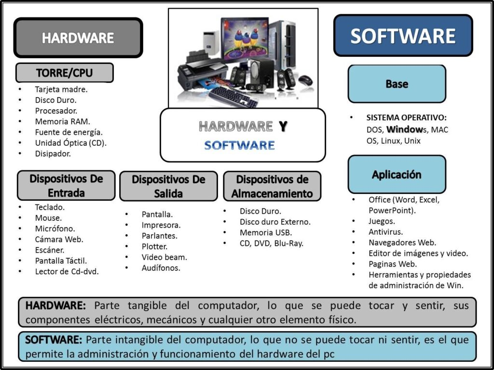

¿Qué es una computadora?
Una computadora es un sistema electrónico diseñado para procesar datos y transformarlos en información útil.
Principales Componentes
- CPU: Cerebro del sistema.
- RAM: Memoria temporal.
- Almacenamiento: HDD o SSD.
- Tarjeta madre: Conecta todo.
- Periféricos: Teclado, ratón, monitor...

Clasificación de Computadoras
- Supercomputadoras
- Mainframes
- Minicomputadoras
- Microcomputadoras
- Dispositivos embebidos
Historia de las Computadoras
- 1ra Generación: Tubos al vacío
- 2da: Transistores
- 3ra: Circuitos integrados
- 4ta: Microprocesadores
- 5ta: Inteligencia Artificial
Sistemas Operativos
- Windows
- Linux
- macOS
- Android
- iOS
Videos Recomendados
¿Qué es una computadora?
Tipos de computadoras
Curiosidades Tecnológicas
- La primera computadora pesaba más de 30 toneladas.
- Los primeros ratones eran de madera.
- Hoy existen más teléfonos inteligentes que personas en el mundo.